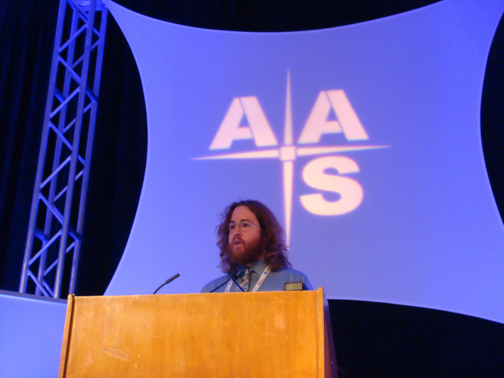
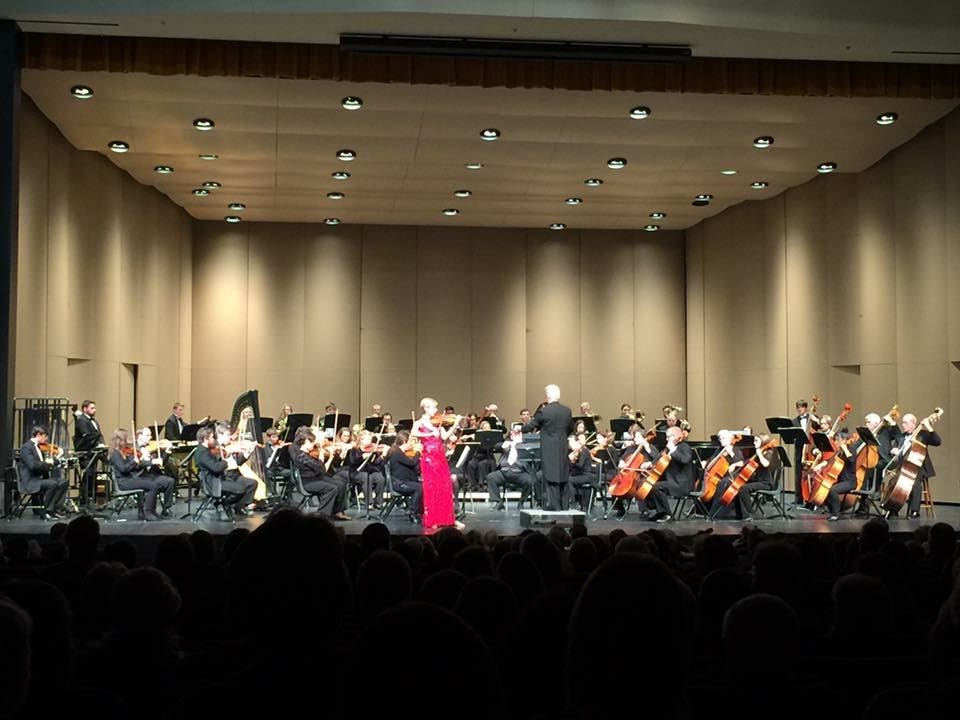
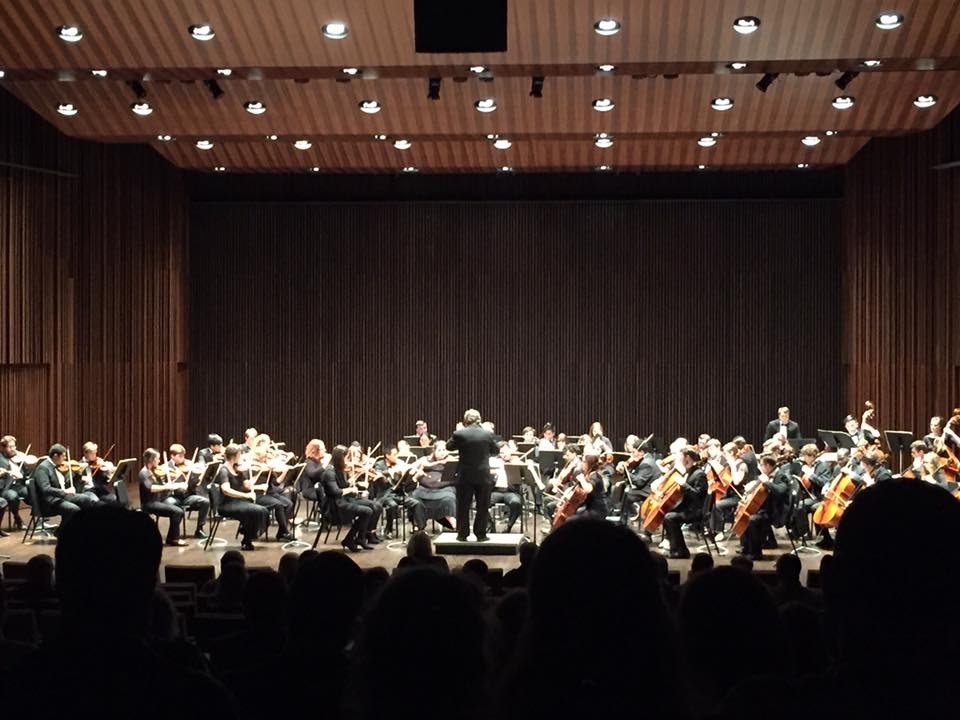

Multimedia
Contents
BACK TO TOP
Presentations

Here, I am giving my "Dissertation" talk at the AAS 221st Meeting, 6-10 January 2013, in Long Beach, CA.
- "The Latest Black Hole Scaling Relations," Supermassive Black Holes: Environment and Evolution, Corfu, Greece, June 20, 2019.
- "Black Hole Mass Scaling Relations," American Astronomical Society Meeting, Vol. 221, 206.02, St. Louis, MO, USA, June 11, 2019.
- "Black Hole Mass Scaling Relations for Spiral Galaxies," Astrophysics Colloquium: The University of Melbourne, September 19, 2018.
- "Black Hole Mass Scaling Relations for Spiral Galaxies Determined from Pitch Angles and Multicomponent Structural Decompositions," Galactic Rings: Signposts of Secular Evolution in Disk Galaxies, May 27, 2018.
- PowerPoint Slides →

- Video (starts at 3:49:30)
- "Black Hole Mass Scaling Relations for Spiral Galaxies Determined from Pitch Angles and Multicomponent Structural Decompositions," ASA 2018 Annual Scientific Meeting, June 28, 2018.
- "Black Hole Mass Scaling Relations," American Astronomical Society Meeting, Vol. 221, 206.02, St. Louis, MO, USA, June 11, 2019.
- "Black Hole Mass Scaling Relations for Spiral Galaxies," Astrophysics Colloquium: The University of Melbourne, September 19, 2018.
- "Black Hole Mass Scaling Relations for Spiral Galaxies Determined from Pitch Angles and Multicomponent Structural Decompositions," Galactic Rings: Signposts of Secular Evolution in Disk Galaxies, May 27, 2018.
- PowerPoint Slides →
- Video (starts at 3:49:30)
- "Black Hole Mass Scaling Relations for Spiral Galaxies Determined from Pitch Angles and Multicomponent Structural Decompositions," ASA 2018 Annual Scientific Meeting, June 28, 2018.
BACK TO TOP
Press Conference
AAS 234 Press Conference: Spiral Galaxies Near & Far (featuring Miller et al. 2019)
BACK TO TOP
Commerically Available Music
"Sonora Lac" by Yume, arranged by Amos Chochran - Ben Davis, viola (2015)
"Gold" by Katie Danielson, arranged by Amos Chochran - Ben Davis, violin and viola (2013)
BACK TO TOP
Live Performances

Arkansas Philharmonic Orchestra with soloist Elizabeth Pitcairn (February 14, 2016)
- Brahms String Sextet No. 1 (Movt. I) - Clunes Music Camp, Candlebark Farm, Healesville, Victoria, Australia - Rowan Thomas, Ben Davis, Barbara Oakes, Miki Pohl, Ian Goding, and Stephanie Exton (September 29, 2019)
- Florence Price / Violin Concerto no. 2 - Arkansas Philharmonic Orchestra with soloist Er-Gene Kahng (2018)
- Florence Price / Violin Concerto no. 2 / another excerpt Arkansas Philharmonic Orchestra with soloist Er-Gene Kahng (2018)
- Florence Price / Violin Concerto no. 2 / short excerpt Arkansas Philharmonic Orchestra with soloist Er-Gene Kahng (2018)
- Appalachian Spring for 13 Player - Aaron Copeland - University of Arkansas (2016)
- Mozart Duo for Violin and Viola in B-flat Major, K. 424 - Arkansas Philharmonic Orchestra Fundraiser - Andrew Chu, Violin; Ben Davis, viola (circa 2015)
- "Flares of Long Duration" by Ryan Cockerham - Arkansas Philharmonic Orchestra Fundraiser - Er-Gene Kahng, Drew Irwin, Ryan Cockerham, Andrew Chu, and Ben Davis (circa 2015)
- Butterfly (excerpt) - Kharjanovsky / Schnittke (arr. by Ryan Cockerham), Crystal Bridges Museum of American Art, Bentonville, AR (2014)
Butterfly (excerpt) - Kharjanovsky / Schnittke (arr. by Ryan Cockerham) from Ryan Cockerham on Vimeo.
Live performance
Er-Gene Kahng, Violin
Ben Davis, Violin
Melissa Melendez, Viola
Carrie Pierce, Cello
Adam Jackson, Electric Piano
Ryan Cockerham, Synth
- Andrej Kharjanovsky / Alfred Schnittke - “The Glass Harmonica” (music arranged by Ryan Cockerham), Crystal Bridges Museum of American Art, Bentonville, AR (2014)
Andrej Kharjanovsky / Alfred Schnittke - "The Glass Harmonica" (music arranged by Ryan Cockerham) from Ryan Cockerham on Vimeo.
Live performance
Er-Gene Kahng, Violin
Ben Davis, Violin
Melissa Melendez, Viola
Carrie Pierce, Cello
Adam Jackson, Electric Piano
Ryan Cockerham, Synth
- Alfred Schnittke Retrospective - St. Paul's Episcopal Church - Fayetteville, AR - November 20, 2014
- Mozart Duo for Violin and Viola in G Major, K. 423 - St. Paul's Episcopal Church - Fayetteville, AR - Andrew Chu, Violin; Ben Davis, viola (2014)
- Mendelssohn String Octet in E-flat Major, Op. 20 - St. Paul's Episcopal Church - Fayetteville, AR - Andrew Chu, 1st Violin; Catalina Barraza, 2nd Violin; Baron Lyle, 3rd Violin; Brice Smith, 4th Violin; Andrew Thompson, 1st Viola; Ben Davis, 2nd viola; Patrick Bellah, 1st Cello; and Ronald Juzeler, 2nd Cello (2014)
- Mozart Clarinet Quintet KV 581 - University of Arkansas - Nattapon Banjatammanon, Clarinet; Ryan Cockerham, 1st Violin; Brice Smith, 2nd Violin; Ben Davis, viola; and Andie Schenk, cello (2010)
- I. Allegro
- II. Larghetto
- IV. Allegretto con Variazioni
- University of Arkansas Symphony Orchestra; Dr. Robert Mueller, director (2009 - 2016)
- Excerpts Brahms Double Concerto with USO; soloists Er-Gene Kahng and David Gerstein (2016)
- Overture to Die Fledermaus (conducted by Brandon Hults)
- Tchaikovsky - Symphony No. 5 in e Minor, Op. 64 (December 5, 2011)
- Dvorak - Symphony No. 8 in G Major, Op. 88, B. 163
- Beethoven: Egmont Overture - Gretchen Renshaw conducting (2012)
- Ellerby Euphonium Concerto; Gretchen Renshaw, euphonium; Ben Davis, concertmaster (2011)
- Movement I
- Movement II
- Movement III
- All Movements
- Beethoven Symphony No. 3 (2011)
- 1st Movement (excerpt)
- 2nd Movement (excerpt)
- 3rd Movement (excerpt)
- Wagner - Ride of the Valkyries (from "Die Walküre") (2011)
- Wagner - Siegfried Idyll (2011)
- Richard Strauss - Tod und Verklärung (March 2, 2010)
- Reinecke - Flute Concerto in D Major, Op. 283 - Brice Smith, flute (March 2, 2010)
- Robert Mueller - Elegiac Verses - Ryan Cockerham, violin (March 2, 2010)
- Beethoven - Symphony No. 6 in F Major "Pastoral" (October 11, 2010)
- Dvorak - Husitska Overture Op. 67 (October 12, 2009)
- Mendelssohn - Symphony No. 5 in D Major/d Minor, Op. 108 (October 12, 2009)
- I. Andante - Allegro con fuoco
- II. Allegro vivace
- III. Andante - IV. Andante con moto - Allegro maestoso
- Sibelius - Karelia Suite, Op. 11 (November 17, 2009)
- Grieg - Holberg Suite, Op. 40 (November 17, 2009)
- Dvorak - Symphony No. 9 in e Minor "From the New World", Op. 95, B. 178 (February 25, 2013)
- Beethoven - Symphony No. 5 in c Minor, Op. 67 (October 15, 2013)
- Richard Strauss - Don Juan, Op. 20 (October 15, 2013)
- Schumann - Symphony No. 2 in C Major (December 7, 2010)
- I. Sostenuto assai - Allegro, ma non troppo
- II. Scherzo: Allegro vivace
- III. Adagio espressivo
- IV. Allegro molto vivace
- Wagner - The Flying Dutchman - Overture (December 7, 2010)

University of Arkansas Symphony Orchestra (May 3, 2016)
BACK TO TOP
Recording Sessions
- Petals by Daniel Dyer (2012)
- The Beatles - Here, There, and Everywhere - Ben Davis, vocals & violin; and Jeff Luton, vocals and guitar (2008)
- Suite for Violin and Orchestra No. 1 by Ryan Cockerham (circa 2007)
- Metallica - To Live is to Die - Ben Davis, guitar; and Jeff Luton, guitar and bass (2007)
BACK TO TOP
Score
Spice by Ryan Cockerham (2014)
BACK TO TOP
The Presidents Cup (2019)
BACK TO TOP
Countries Visited
Create your own visited countries map or check out the JavaScript Charts.
BACK TO TOP
HOME
Recent Highlights


Astronomy Picture of the Day
Date, Time, & Weather
Coordinated Universal Time
Melbourne, Victoria, Australia
Joplin, Missouri, United States
Currency Exchange Rate
Contact
- Download my Virtual Contact File
- benjamindavis@swin.edu.au (Work)
- bendavis007@hotmail.com (Personal)
- benjaminleedavis007@gmail.com (Alternate)
- +61 3 9214 5536 (Office Phone)
- +61 4 2069 0906 (AU Cell)
- +1 (417) 396-5252 (US Cell)
- +1 (620) 848-3981 (US Landline)
- bendavis007
- benjamin.davis.12
- Mail Number H29, Swinburne University of Technology, PO Box 218, Hawthorn, VIC 3122, Australia
- Room 304, Arts Building, Centre for Astrophysics and Supercomputing, Swinburne University of Technology, Hawthorn, VIC 3122, Australia
- 106/77 Riversdale Road, Hawthorn, VIC 3122, Australia
- 6970 SE Kiwi Lane, Riverton, KS 66770, USA